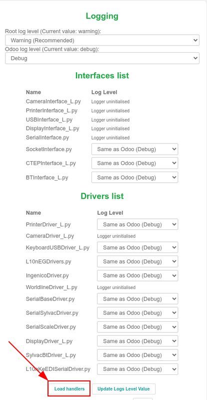

Actualizar (IoT)¶
Debido a lo compleja que es la caja IoT y a la caja virtual de Windows IoT, el término «actualizar» puede significar muchas cosas.
Los drivers se pueden actualizar, el código base de la caja IoT se puede actualizar, o puede actualizar una imagen (usando una cajal IoT física).
En este documento se exploran varias formas de actualizar las cajas IoT para asegurar un funcionamiento sin problemas de los procesos y dispositivos de la caja IoT.
Actualizar la memoria SD en la caja IoT¶
Importante
Esta actualización no funciona con la caja IoT de Windows (Odoo 16 o versiones posteriores).
Para actualizar la caja IoT de Windows primero debe desinstalar la versión anterior del software de Odoo para Windows para después volver a instalarlo usando el paquete de instalación más reciente.
Para iniciar la instalación, vaya al paquete de instalación de Odoo 16 (o versiones posteriores) de Enterprise o Community - edición Windows, en la página de descarga de Odoo.
En algunos casos es probable que deba volver a actualizar la tarjeta micro SD de la caja IoT con el software Etcher para que pueda beneficiarse de la actualización de imagen de IoT más reciente de Odoo. Esto significa que el software de la caja IoT de Odoo debe actualizarse en caso de que una nueva caja IoT, una actualización de un control o una actualización desde la página de inicio de la caja IoT no solucione los problemas.
Nota
Normalmente es necesario volver a actualizar la imagen de la caja IoT después de actualizar la base de datos de Odoo a una versión nueva.
Se necesita una computadora con un lector o adaptador de memoria micro SD para actualizar la memoria de la tarjeta micro SD.
Primero descargue Etcher. Es un servicio básico gratis de código abierto que se usa para quemar imágenes de archivos en memorias. Después de que finalice la descarga, instale y ejecute el programa en la computadora.
Después, descargue la imagen IoT más reciente desde nightly, que podrá reconocer por el nombre iotbox-latest.zip. Esta imagen es compatible con todas las versiones soportadas de Odoo.
Una vez completado este paso, inserte la memoria micro SD de la caja IoT en la computadora o un lector. Abra Etcher y seleccione Actualizar desde archivo, después busque y seleccione la imagen iotbox-latest.zip y extráigala. A continuación, seleccione la unidad en la que desee grabar la imagen. Por último, haga clic en Actualizar y espere a que finalice el proceso.
Finalmente, haga clic en Actualizar y espere a que el proceso finalice.

Truco
El software Etcher de Balena también permite que el administrador actualice la tarjeta SD desde una URL. Para actualizarla desde un URL, simplemente haga clic en Actualizar desde URL, en lugar de Actualizar desde archivo.
Después, ingrese: http://nightly.odoo.com/master/iotbox/iotbox-latest.zip.
Nota
Un software alternativo para actualizar la tarjeta micro SD es Raspberry Pi Imager.
Actualización de la caja IoT de Windows¶
Es posible que tenga que actualizar la caja virtual de IoT de Windows de vez en cuando para que siga funcionando apropiadamente.
El siguiente proceso cubre la desinstalación y la forma de volver a instalar la caja virtual de IoT de Windows.
Desinstalar Windows IoT¶
Antes de actualizar la caja virtual de IoT de Windows, primero debe desinstalar la versión previa.
Importante
Antes de desinstalar la versión prueba de la caja virtual de IoT de Windows asegúrese de que haya una nueva versión nueva de la caja virtual de IoT de Windows disponible. Para hacerlo vaya a la página servidor nocturno de Odoo.
En la página Servidor nocturno de Odoo vaya a para ver la fecha para el siguiente archivo odoo_(versión).latest.exe, donde (versión) es igual a la versión de Odoo (por ejemplo, 16.0, 17.0). La versión más reciente de la caja virtual de IoT de Windows se puede descargar si hace clic en este archivo, o siempre estará disponible en la página Descargar Odoo
Desinstalar la caja virtual de IoT de Windows se hace a través del Administrador de programas.
Busque programa en cualquier versión de Windows para abrir la sección del panel de control. Después, seleccione Desinstalar o cambiar un programa. Después, busque Odoo y haga clic en el menú … (tres puntos) del programa Odoo.exe para desinstalarlo.
Confirme la desinstalación y siga los pasos del asistente de desinstalación de Odoo.
Descargar y volver a instalar¶
La versión más reciente de la caja virtual de IoT de Windows se puede descargar en la página del servidor nocturno de Odoo o siempre está disponible en la página Descargar Odoo.
Para descargar desde la página servidor nocturno de Odoo vaya a y seleccione el archivo odoo_(versión).latest.exe; donde (versión) es igual a la versión de Odoo (por ejemplo, 16.0, 17.0).
Para descargar desde la página de Descargar Odoo vaya a la sección para su versión de Odoo (por ejemplo, 16.0, 17.0) y seleccione el botón Descargar para Windows.
Después, instale y configure el archivo .exe que descargó de Odoo. Después de la pantalla de instrucciones, haga clic en Siguiente para iniciar la instalación y acepte los Términos de servicio.
Durante el siguiente paso de el proceso de volver a instalar, seleccione Odoo IoT en el menú desplegable Seleccione el tipo de instalación.
Example
Como referencia, debe instalar lo siguiente:
Servidor de Odoo
IoT de Odoo
Servidor web Nginx
El intérprete de lenguaje Ghostscript
Asegúrese de que hay suficiente espacio en el equipo para la instalación y haga clic en Siguiente.
Seleccionar una carpeta de destino y completar la instalación¶
Para completar el proceso de reinstalación, seleccione la carpeta de destino y haga clic en Instalar.
Advertencia
Elegir C:\odoo como ubicación de instalación permite que el servidor Nginx se inicie. El software de la caja virtual IoT de Windows de Odoo no debe instalarse* dentro de ninguno de los directorios del usuario Windows. Si lo hace, *Nginx* **no se ejecutará.
La instalación puede tardar algunos minutos. Cuando esté completa, haga clic en siguiente para continuar.
Para asegúrese de que la casilla Iniciar Odoo está seleccionada y haga clic en Terminar. Después de la instalación, el servidor de Odoo se ejecutará y abrirá http://localhost:8069 de forma automática en el navegador web. La página web debe mostrar la página de inicio de la caja IoT.
Truco
Posiblemente deberá reiniciar el programa IoT de Windows si el navegador web no muestra nada.
Actualizar desde la página de inicio de la caja IoT¶
En el fondo, la caja IoT usa una versión del código de Odoo para poder funcionar y conectarse a la base de datos. Es posible que necesite actualizar este código para que la caja IoT funcione bien. Esta operación se debe realizar de forma rutinaria para asegurarse de que el sistema de la caja IoT y sus procesos se mantengan actualizados.
Vaya a la página de inicio de la caja IoT en la aplicación y haga clic en la Dirección IP de la caja IoT. Después, haga clic en Actualizar (junto al número de versión).
Si hay disponible una nueva versión de la imagen de la caja IoT, aparecerá un botón Actualizar a _xx.xx_ en la parte inferior de la página. Haga clic en este botón para actualizar la unidad y la caja IoT se actualizará a la nueva versión. Se guardarán todas las configuraciones anteriores.
Importante
Este proceso puede durar más de 30 minutos. No apague ni desconecte la caja IoT ya que la dejaría en un estado inestable. Esto significa que la caja IoT necesitará volver a actualizarse con una nueva imagen.
Actualización de controlador (driver)¶
Puede haber algunos casos en las que las memorias o interfaces que necesite actualizar para dispositivos individuales (por ejemplo, escalas, herramientas de medición, entre otros). Para modificar los controladores IoT (drivers e interfaces) debe sincronizarlos con el código del controlador configurado en el servidor.
Esto puede ser útil en aquellas situaciones donde los dispositivos IoT (como básculas, herramientas de medición…) no estén funcionando de forma adecuada con la caja IoT.
Tanto para la caja IoT de Windows (Odoo 16 y superior) como para la caja IoT física, este proceso se puede realizar manualmente desde la página de inicio de la caja IoT. Vaya a la página de inicio de la caja IoT navegando a , y haga clic en la dirección IP de la caja IoT.
Después, haga clic en Lista de controladores en la parte inferior de la página.
Importante
El código de controladores se obtiene del servidor configurado y necesita estar actualizado con las correcciones y parches más recientes.
Nota
También se realiza una actualización automática del controlador cada vez que se reinicia la caja IoT. La única excepción a este proceso es si la Actualización automática de controladores está desmarcada en la vista de formulario de la caja IoT en el servidor Odoo. Se puede acceder a esta configuración yendo a .